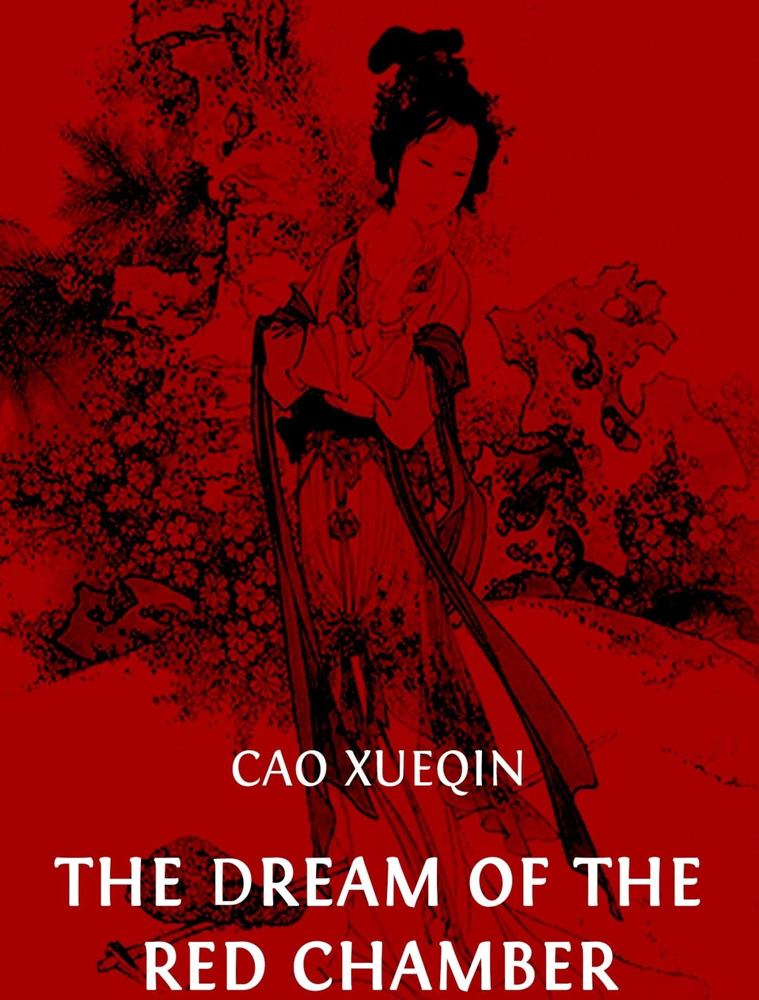

 "The Dream of the Red Chamber," also known as "The Story of the Stone," is a monumental work of Chinese literature written by Cao Xueqin during the 18th century. This captivating novel has stood the test of time, captivating readers with its intricate storytelling, vivid characterizations, and profound exploration of love, fate, and the human condition. "The Dream of the Red Chamber" is a literary gem that continues to enthrall readers around the world.
Cao Xueqin's "The Dream of the Red Chamber" transports readers into the vibrant world of 18th-century China, immersing them in the lives of the Jia clan and their sprawling ancestral mansion. The novel presents a rich tapestry of characters, each meticulously crafted and endowed with unique personalities and motivations. From the sensitive and introspective protagonist, Jia Baoyu, to the strong-willed and enigmatic Lin Daiyu, every character in this epic tale comes to life with unparalleled depth and complexity.
The narrative unfolds with a delicate balance of realism and magical elements, seamlessly blending everyday life with dreamlike sequences. The author's exquisite prose captures the essence of Chinese culture, customs, and traditions, painting a vivid picture of a bygone era. Through his masterful storytelling, Cao Xueqin delves into universal themes such as love, desire, family, power, and the inevitability of change.
"The Dream of the Red Chamber" is a literary marvel not only for its compelling plot but also for its profound philosophical insights. Beneath the surface of the Jia clan's decadent lifestyle lies a critique of societal norms, the transience of material wealth, and the fragility of human existence. Cao Xueqin's exploration of the human condition and the intricate web of relationships is as relevant today as it was centuries ago.
One of the novel's greatest strengths is its ability to evoke a wide range of emotions in readers. From moments of joy, laughter, and tender affection to heart-wrenching tragedy and overwhelming sorrow, the story takes readers on an emotional rollercoaster. "The Dream of the Red Chamber" is a poignant reminder of the ephemeral nature of life and the fleeting moments of happiness that we often take for granted.
"The Dream of the Red Chamber" is a literary masterpiece that deserves its place among the greatest works of world literature. Cao Xueqin's mesmerizing storytelling, profound characterizations, and timeless themes make this novel a must-read for anyone seeking a captivating and thought-provoking literary experience. Whether you are a fan of historical fiction, Chinese culture, or simply appreciate beautifully crafted prose, "The Dream of the Red Chamber" will leave an indelible mark on your literary journey. Prepare to be transported to a world of beauty, tragedy, and profound introspection as you delve into this timeless classic.